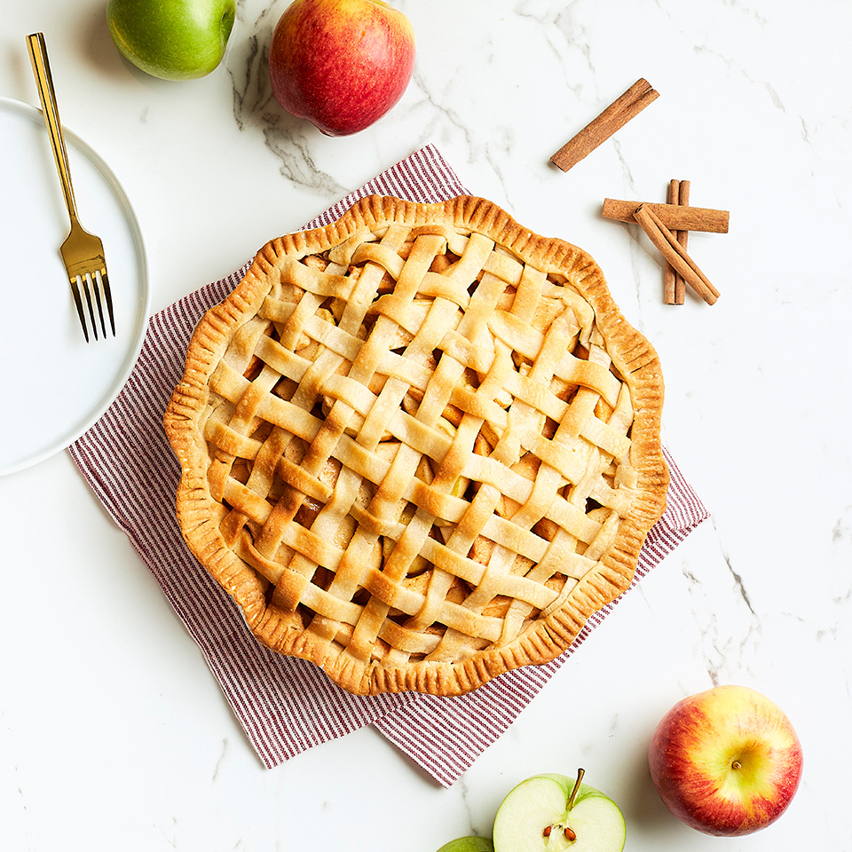

Panzenella from Italy
Panzanella or panmolle is a Tuscan chopped salad of soaked stale bread, onions and tomatoes that is popular in the summer.

Apple Pie from America
An apple pie is a pie in which the principal filling ingredient is apple. It is often served with ice cream.
Tacos from Mexico
A taco is a traditional Mexican dish consisting of a small hand-sized corn .
Sushi from Japan
Sushi is a Japanese dish of prepared vinegared rice

Hamburger from New York
A hamburger is a sandwich consisting of one or more cooked patties of ground meat.